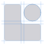
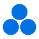
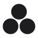
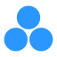
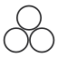
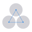

Candidates
1 · Fit
Shape the part to its purpose.
- The science
- A building block shaped exactly to hold its function. The L is the precise block, the sphere is the functional unit, a particle or an active site. The equal gaps are the precision.
- The principles
- Integrity: the block is one whole piece. Mastery: a fit this exact takes skill. Honesty: two shapes and nothing else.
- The name
- Reads as L, as in Lawrence Lab.
- Risks
- Can read as a ball on a chair, which points to furniture. Needs a trademark search before use.
Colour
One colour

Dark
Outline

Construction
2 · Count
Every unit accounted for.
- The science
- Identical building blocks and one functional unit on an exact grid. The circle fits its cell, so the material is defined to the last part.
- The principles
- Precision and honesty: anyone can count every part. The gaps between the four cells form a plus sign, the grid that holds the parts in place.
- The name
- The three squares form an L.
- Risks
- Close to Google's Material widgets icon.
Colour
One colour
Dark
Outline
Negative space
32 and 16 px
3 · Three
Identical, equal, one.
- The science
- Three identical spheres in close packing, the smallest unit of an ordered material. Discrete building blocks that assemble without a defect.
- The principles
- Integrity as wholeness: three equal parts make one form. Monodisperse particles packing perfectly, with no part larger than another.
- The name
- None. The mark carries the idea, and the wordmark carries the name.
- Risks
- Three-circle motifs are common in molecule icons and some brands, so it is the least ownable of the three.

Colour

One colour

Dark

Outline

Construction
32 and 16 px
Before choosing: show each mark for five seconds to five colleagues and five people outside science, and ask what they see. Then search the US trademark database for similar designs and check LSU's rules for unit logos.